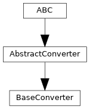
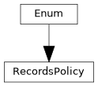

pyTRLCConverter.base_converter
Converter base class which does the argparser handling and provides helper functions.
Author: Norbert Schulz (norbert.schulz@newtec.de)
Classes
Base converter with empty method implementations and helper functions |
|
Enum class to define policies for handling records during conversion. |
Module Contents
- class pyTRLCConverter.base_converter.BaseConverter(args: Any)[source]
Bases:
pyTRLCConverter.abstract_converter.AbstractConverter
Base converter with empty method implementations and helper functions for subclassing converters.
- _get_attribute(record: pyTRLCConverter.trlc_helper.Record_Object, attribute_name: str) str[source]
- Get the attribute value from the record object.
If the attribute is not found or empty, return the default value.
- Parameters:
record (Record_Object) – The record object
attribute_name (str) – The attribute name to get the value from.
- Returns:
The attribute value.
- Return type:
str
- _set_project_record_handler(record_type: str, handler: Callable) None[source]
Set a project specific record handler.
- Parameters:
record_type (str) – The record type
handler (Callable) – The handler function
- _set_project_record_handlers(handlers: dict[str, Callable]) None[source]
Set project specific record handlers.
- Parameters:
handler (dict[str, Callable]) – List of record type and handler function tuples
- _translate_attribute_name(translation: dict | None, attribute_name: str) str[source]
- Translate attribute name on demand.
If no translation is provided, the attribute name will be returned as is.
- Parameters:
translation (Optional[dict]) – The translation dictionary.
attribute_name (str) – The attribute name to translate.
- Returns:
The translated attribute name.
- Return type:
str
- begin() pyTRLCConverter.ret.Ret[source]
Begin the conversion process.
- Returns:
Status
- Return type:
- convert_record_object(record: pyTRLCConverter.trlc_helper.Record_Object, level: int) pyTRLCConverter.ret.Ret[source]
Process the given record object.
- Parameters:
record (Record_Object) – The record object
level (int) – The record level
- Returns:
Status
- Return type:
- abstractmethod convert_record_object_generic(record: pyTRLCConverter.trlc_helper.Record_Object, level: int, translation: dict | None) pyTRLCConverter.ret.Ret[source]
Convert a record object generically.
- Parameters:
record (Record_Object) – The record object.
level (int) – The record level.
translation (Optional[dict]) – Translation dictionary for the record object. If None, no translation is applied.
- Returns:
Status
- Return type:
- convert_section(section: str, level: int) pyTRLCConverter.ret.Ret[source]
Process the given section item.
- Parameters:
section (str) – The section name
level (int) – The section indentation level
- Returns:
Status
- Return type:
- enter_file(file_name: str) pyTRLCConverter.ret.Ret[source]
Enter a file.
- Parameters:
file_name (str) – File name
- Returns:
Status
- Return type:
- leave_file(file_name: str) pyTRLCConverter.ret.Ret[source]
Leave a file.
- Parameters:
file_name (str) – File name
- Returns:
Status
- Return type:
- classmethod register(args_parser: Any) None[source]
Register converter specific argument parser.
- Parameters:
args_parser (Any) – Argument parser
- set_render_cfg(render_cfg: pyTRLCConverter.render_config.RenderConfig) None[source]
Set the render configuration.
- Parameters:
render_cfg (RenderConfig) – Render configuration
- EMPTY_ATTRIBUTE_DEFAULT = 'N/A'
- _args
- _empty_attribute_value = 'N/A'
- _parser = None
- _record_handler_dict: dict[str, Callable]
- _record_policy
- _render_cfg
- _translator
- class pyTRLCConverter.base_converter.RecordsPolicy(*args, **kwds)[source]
Bases:
enum.Enum
Enum class to define policies for handling records during conversion.
- RECORD_CONVERT_ALL = 1
Convert all records, including undefined ones using convert_record_object_generic().
- RECORD_SKIP_UNDEFINED = 2
Skip record types that are not linked to a handler.